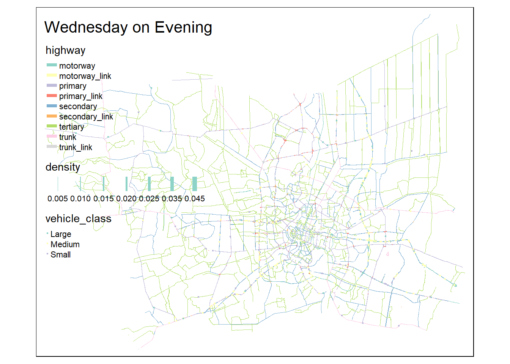
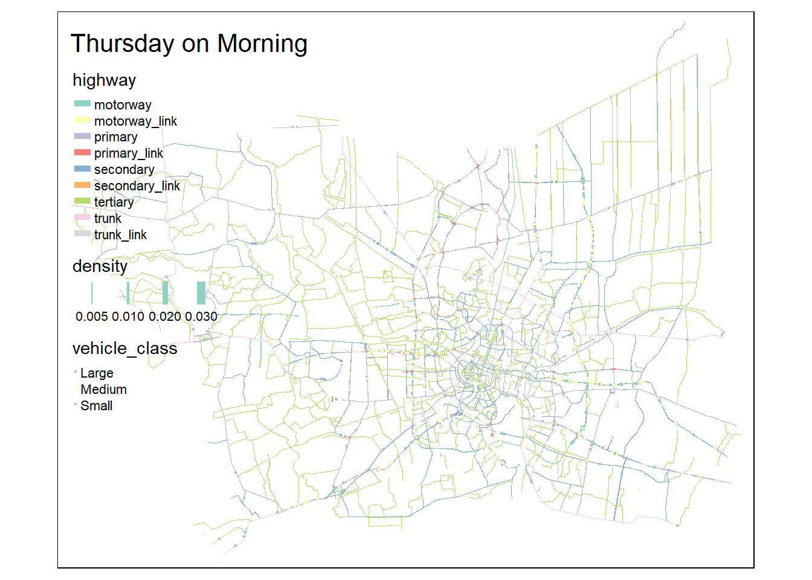
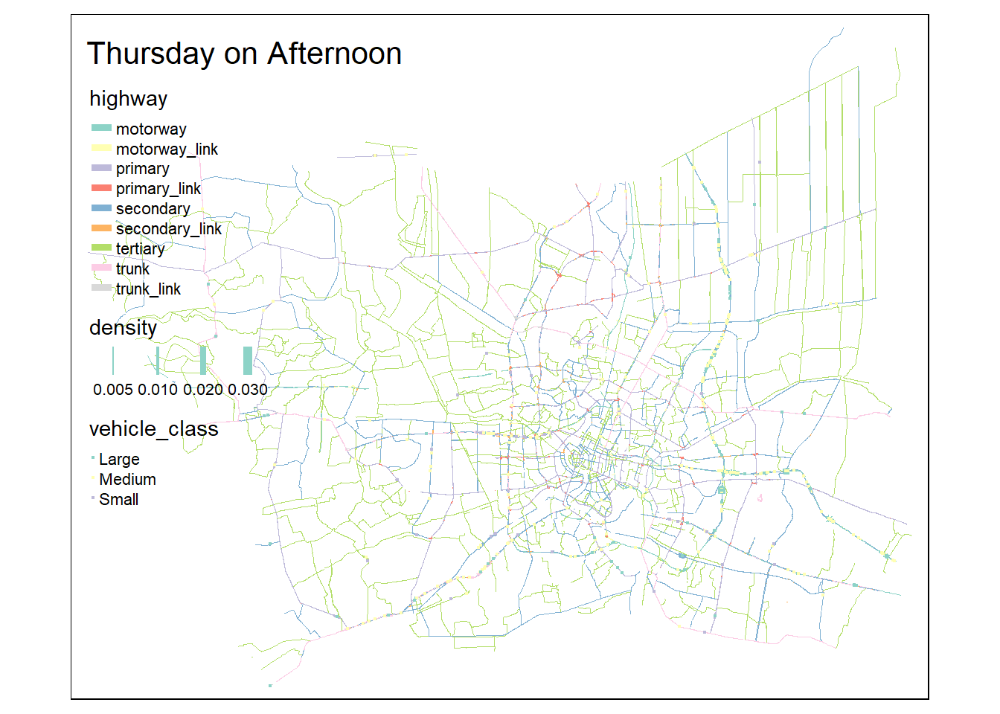
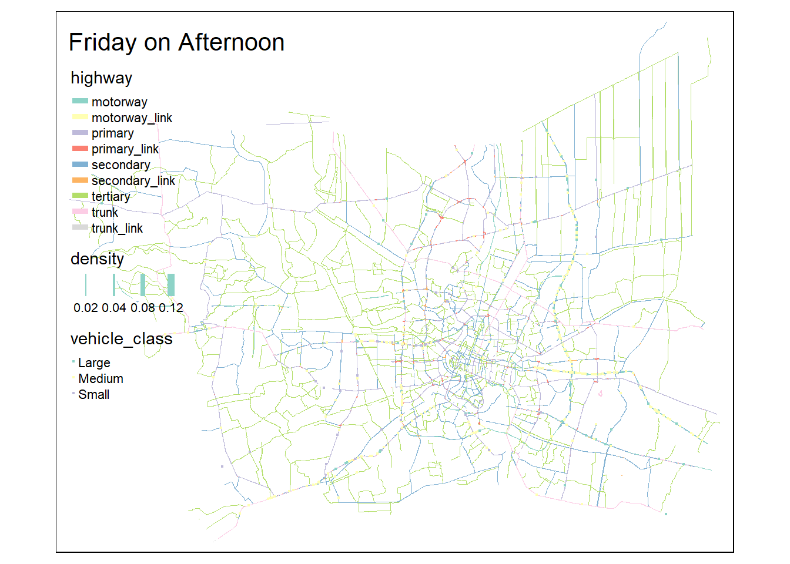
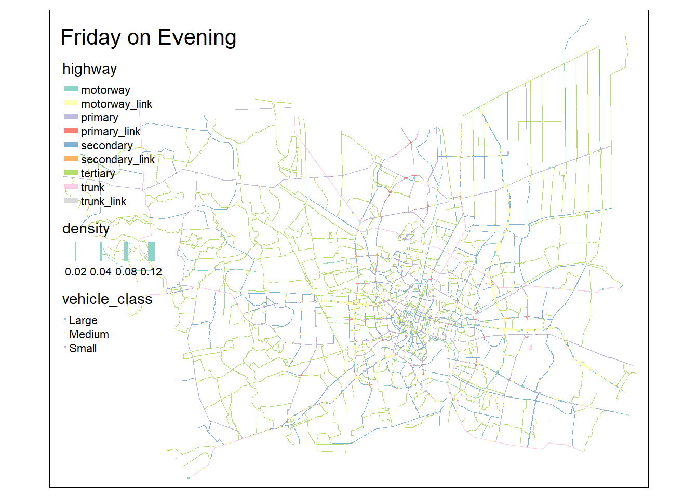
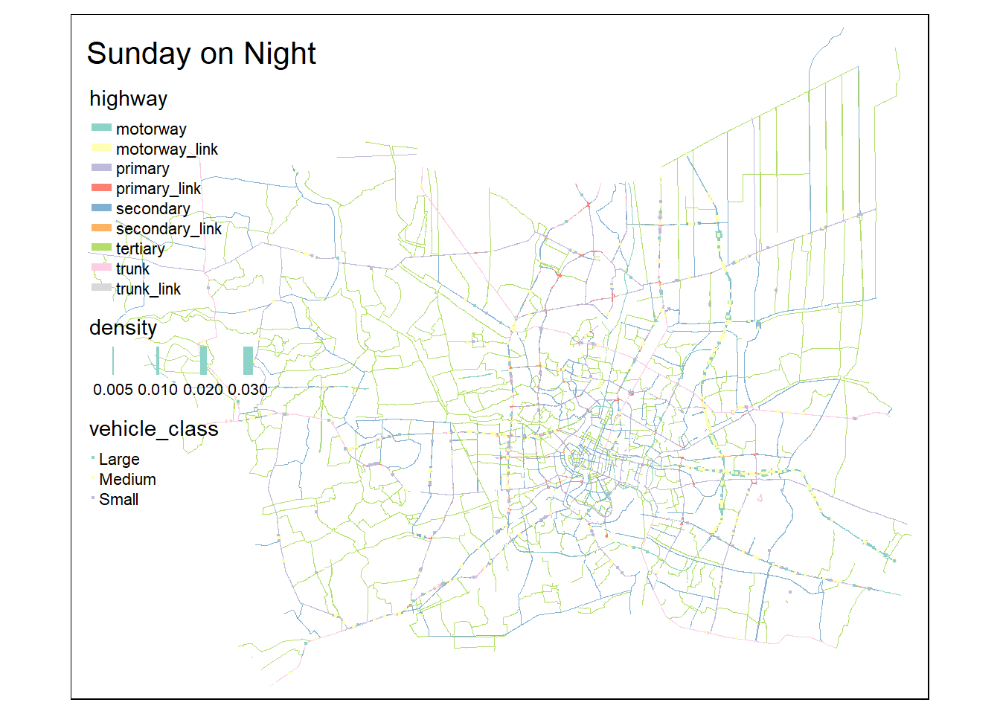
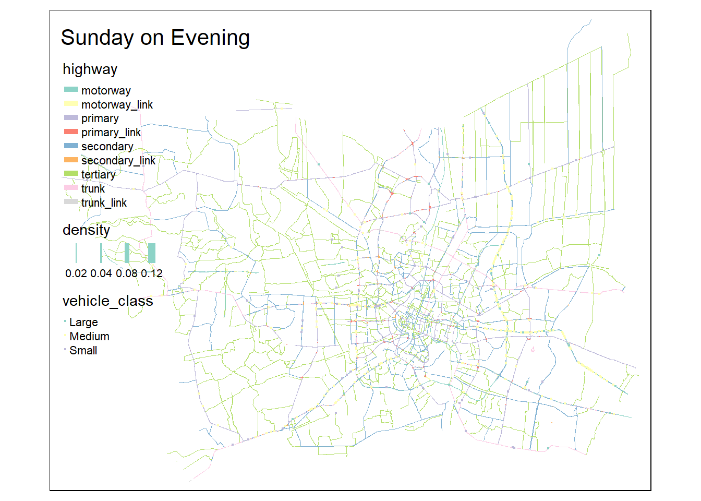

pacman::p_load("sf", "tidyverse", "tmap", "ggstatsplot", "spatstat", "spNetwork", "tmaptools")Take Home Exercise 1
Take Home Exercise 1
Part 1 : Reading the Data
Import the road accident data
rdacc_sf <- read_csv("data/thai_road_accident_2019_2022.csv") %>% # Read the data
mutate(Month = month(incident_datetime, label=TRUE)) %>% # Get month, set the date as factor by number
mutate(dayofweek = day(incident_datetime)) %>% # Day of the week
mutate(Month_fac = month(incident_datetime, label = FALSE)) %>% # Sort by Factor setting label = FALSE
filter(!is.na(longitude) & longitude != "", !is.na(latitude) & latitude != "") %>% # Filter for N.A. and empty values
st_as_sf(coords = c("longitude", "latitude"), crs=4326) %>% # Convert to SF format
st_transform(crs = 32647) # Convert to the correct formatRows: 81735 Columns: 18
── Column specification ────────────────────────────────────────────────────────
Delimiter: ","
chr (10): province_th, province_en, agency, route, vehicle_type, presumed_c...
dbl (6): acc_code, number_of_vehicles_involved, number_of_fatalities, numb...
dttm (2): incident_datetime, report_datetime
ℹ Use `spec()` to retrieve the full column specification for this data.
ℹ Specify the column types or set `show_col_types = FALSE` to quiet this message.# Use 32647 Format because the metro area is hereView the data, check for data loss NO MORE THAN 25%
# Change to dataframe, check col names
rdacc_df <- as.data.frame(rdacc_sf)
colnames(rdacc_df) [1] "acc_code" "incident_datetime"
[3] "report_datetime" "province_th"
[5] "province_en" "agency"
[7] "route" "vehicle_type"
[9] "presumed_cause" "accident_type"
[11] "number_of_vehicles_involved" "number_of_fatalities"
[13] "number_of_injuries" "weather_condition"
[15] "road_description" "slope_description"
[17] "Month" "dayofweek"
[19] "Month_fac" "geometry" rdacc_sfSimple feature collection with 81376 features and 19 fields
Geometry type: POINT
Dimension: XY
Bounding box: xmin: -16183190 ymin: -936.228 xmax: 1200243 ymax: 4918525
Projected CRS: WGS 84 / UTM zone 47N
# A tibble: 81,376 × 20
acc_code incident_datetime report_datetime province_th province_en
* <dbl> <dttm> <dttm> <chr> <chr>
1 571905 2019-01-01 00:00:00 2019-01-02 06:11:00 ลพบุรี Loburi
2 3790870 2019-01-01 00:03:00 2020-02-20 13:48:00 อุบลราชธานี Ubon Ratchathani
3 599075 2019-01-01 00:05:00 2019-01-01 10:35:00 ประจวบคีรีขันธ์ Prachuap Khiri …
4 571924 2019-01-01 00:20:00 2019-01-02 05:12:00 เชียงใหม่ Chiang Mai
5 599523 2019-01-01 00:25:00 2019-01-04 09:42:00 นครสวรรค์ Nakhon Sawan
6 571982 2019-01-01 00:30:00 2019-01-07 12:46:00 แม่ฮ่องสอน Mae Hong Son
7 612782 2019-01-01 00:30:00 2019-10-25 14:25:00 ชุมพร Chumphon
8 599235 2019-01-01 00:35:00 2019-01-02 16:23:00 สิงห์บุรี Sing Buri
9 600643 2019-01-01 00:40:00 2019-01-11 10:01:00 สงขลา Songkhla
10 599105 2019-01-01 00:45:00 2019-01-01 10:11:00 ตราด Trat
# ℹ 81,366 more rows
# ℹ 15 more variables: agency <chr>, route <chr>, vehicle_type <chr>,
# presumed_cause <chr>, accident_type <chr>,
# number_of_vehicles_involved <dbl>, number_of_fatalities <dbl>,
# number_of_injuries <dbl>, weather_condition <chr>, road_description <chr>,
# slope_description <chr>, Month <ord>, dayofweek <int>, Month_fac <dbl>,
# geometry <POINT [m]># Inspect data
# Get descriptions on types of data types
print('presumed_cause')[1] "presumed_cause"unique(rdacc_df$presumed_cause) [1] "driving under the influence of alcohol"
[2] "speeding"
[3] "cutting in closely by people/vehicles/animals"
[4] "failure to yield right of way"
[5] "failure to yield/signal"
[6] "falling asleep"
[7] "running red lights/traffic signals"
[8] "other"
[9] "unfamiliarity with the route/unskilled driving"
[10] "vehicle equipment failure"
[11] "illegal overtaking"
[12] "tailgating"
[13] "ignoring stop sign while leaving intersection"
[14] "overloaded vehicle"
[15] "insufficient light"
[16] "disabled vehicle without proper signals"
[17] "abrupt lane change"
[18] "debris/obstruction on the road"
[19] "reversing vehicle"
[20] "brake/anti-lock brake system failure"
[21] "medical condition"
[22] "vehicle electrical system failure"
[23] "driving in the wrong lane"
[24] "straddling lanes"
[25] "dangerous curve"
[26] "failure to signal enter/exit parking"
[27] "slippery road"
[28] "no traffic signs"
[29] "sudden stop"
[30] "using mobile phone while driving"
[31] "driving without headlights/illumination"
[32] "worn-out/tire blowout"
[33] "obstruction in sight"
[34] "traffic light system failure"
[35] "disabled vehicle without proper signals/signs"
[36] "narrow road"
[37] "turn signal system failure"
[38] "navigation equipment failure"
[39] "inadequate visibility"
[40] "road in poor condition"
[41] "ป้ายจราจรชำรุด"
[42] "เส้นแบ่งทิศทางจราจรชำรุด"
[43] "repair/construction on the road"
[44] "no presumed cause related to driver"
[45] "external disturbance"
[46] "no presumed cause related to vehicle conditions"
[47] "no presumed cause related to road conditions"
[48] "no road divider lines"
[49] "loss of control"
[50] "using psychoactive substances"
[51] "no traffic light system"
[52] "aggressive driving/overtaking"
[53] "internal disturbance"
[54] "มึนเมาจากแอลกอฮอล์" print('number_of_fatalities')[1] "number_of_fatalities"unique(rdacc_df$number_of_fatalities) [1] 0 1 3 2 5 6 9 4 10 7 11 13 8print('weather_condition')[1] "weather_condition"unique(rdacc_df$road_description) [1] "straight road"
[2] "wide curve"
[3] "other"
[4] "connecting to public/commercial area"
[5] "sharp curve"
[6] "four-way intersection"
[7] "connecting to private area"
[8] "t-intersection"
[9] "y-intersection"
[10] "grade-separated intersection/ramps"
[11] "merge lane"
[12] "connecting to school area"
[13] "lane-changing area"
[14] "u-turn area"
[15] "roundabout"
[16] "motorcycle lane"
[17] "pedestrian path"
[18] "bridge (across river/canal)"
[19] "zebra crossing/pedestrian crossing" print('weather_condition')[1] "weather_condition"unique(rdacc_df$weather_condition)[1] "clear" "foggy" "dark" "rainy"
[5] "other" "natural disaster" "land slide" print('vehicle_type')[1] "vehicle_type"unique(rdacc_df$vehicle_type) [1] "motorcycle" "private/passenger car"
[3] "4-wheel pickup truck" "other"
[5] "motorized tricycle" "large truck with trailer"
[7] "van" "6-wheel truck"
[9] "7-10-wheel truck" "bicycle"
[11] "passenger pickup truck" "pedestrian"
[13] "large passenger vehicle" "tractor/agricultural vehicle"
[15] "three-wheeled vehicle" May need to bin certain data into smaller bits so as to draw conclusions
rdacc_df <- as.data.frame(rdacc_sf)
colnames(rdacc_df) [1] "acc_code" "incident_datetime"
[3] "report_datetime" "province_th"
[5] "province_en" "agency"
[7] "route" "vehicle_type"
[9] "presumed_cause" "accident_type"
[11] "number_of_vehicles_involved" "number_of_fatalities"
[13] "number_of_injuries" "weather_condition"
[15] "road_description" "slope_description"
[17] "Month" "dayofweek"
[19] "Month_fac" "geometry" Read the road data
thai_rl_sf <- st_read(dsn = "data", layer = "hotosm_tha_roads_lines_shp") %>%
st_set_crs(4326) %>%
st_transform(crs = 32647)Reading layer `hotosm_tha_roads_lines_shp' from data source
`C:\Users\Admin\Desktop\SMU\ISSS626\ISSS626-KierenChua\TakeHomeEx\TakeHomeEx01\data'
using driver `ESRI Shapefile'
Simple feature collection with 2792590 features and 14 fields
Geometry type: MULTILINESTRING
Dimension: XY
Bounding box: xmin: 97.34457 ymin: 5.643645 xmax: 105.6528 ymax: 20.47168
CRS: NAthai_rl_sfSimple feature collection with 2792590 features and 14 fields
Geometry type: MULTILINESTRING
Dimension: XY
Bounding box: xmin: 325313.7 ymin: 624248.4 xmax: 1215576 ymax: 2263968
Projected CRS: WGS 84 / UTM zone 47N
First 10 features:
name name_en highway surface smoothness
1 ถนนฉลองกรุง Chalong Krung Road secondary paved <NA>
2 ซอยฉลองกรุง 1/1 Soi Chalong Krung 1/1 residential <NA> <NA>
3 <NA> <NA> secondary_link <NA> <NA>
4 <NA> <NA> service <NA> <NA>
5 ถนนฉลองกรุง Chalong Krung Road secondary concrete <NA>
6 <NA> <NA> service <NA> <NA>
7 ถนนเอราวัณ 1 Erawan 1 Road tertiary <NA> <NA>
8 <NA> <NA> path unpaved <NA>
9 <NA> <NA> service <NA> <NA>
10 <NA> <NA> residential <NA> <NA>
width lanes oneway bridge layer source name_th osm_id osm_type
1 <NA> <NA> yes <NA> <NA> <NA> ถนนฉลองกรุง 1125681229 ways_line
2 <NA> <NA> <NA> <NA> <NA> <NA> ซอยฉลองกรุง 1/1 594401607 ways_line
3 <NA> <NA> yes <NA> <NA> <NA> <NA> 472283206 ways_line
4 <NA> <NA> <NA> <NA> <NA> <NA> <NA> 594401608 ways_line
5 <NA> 2 yes yes 1 Bing ถนนฉลองกรุง 116847248 ways_line
6 <NA> <NA> <NA> <NA> <NA> <NA> <NA> 317485095 ways_line
7 <NA> <NA> <NA> <NA> <NA> <NA> ถนนเอราวัณ 1 378672881 ways_line
8 <NA> <NA> <NA> <NA> <NA> GPS <NA> 1238351123 ways_line
9 <NA> <NA> <NA> <NA> <NA> <NA> <NA> 909942692 ways_line
10 <NA> <NA> <NA> <NA> <NA> <NA> <NA> 694824299 ways_line
geometry
1 MULTILINESTRING ((693686.1 ...
2 MULTILINESTRING ((693358 15...
3 MULTILINESTRING ((692949.1 ...
4 MULTILINESTRING ((693256 15...
5 MULTILINESTRING ((692810.8 ...
6 MULTILINESTRING ((693877.2 ...
7 MULTILINESTRING ((677182.3 ...
8 MULTILINESTRING ((486572.6 ...
9 MULTILINESTRING ((629009.2 ...
10 MULTILINESTRING ((629703.9 ...We are only interested in the Thai Metro Area, so need to read the boundaries from the boundary data and filter there
# Read from the province layer, note that the Thai Metro area contains only
# Bangkok
# Nonthaburi
# Nakhon Pathom
# Pathum Thani
# Samut Prakan
# Samut Sakhon
thai_boundaries <- st_read(dsn = "data", layer = "tha_admbnda_adm1_rtsd_20220121") %>% st_transform(crs = 32647)Reading layer `tha_admbnda_adm1_rtsd_20220121' from data source
`C:\Users\Admin\Desktop\SMU\ISSS626\ISSS626-KierenChua\TakeHomeEx\TakeHomeEx01\data'
using driver `ESRI Shapefile'
Simple feature collection with 77 features and 16 fields
Geometry type: MULTIPOLYGON
Dimension: XY
Bounding box: xmin: 97.34336 ymin: 5.613038 xmax: 105.637 ymax: 20.46507
Geodetic CRS: WGS 84Part 2 : Split by location
Since the regions only contains the said regions, we can split it down to the regions for better data processing speed. Said locations are
- Bangkok
- Nonthaburi
- Nakhon Pathom
- Pathum Thani
- Samut Prakan
- Samut Sakhon
# Filter the thai boundaries by said locations
selected_location_list <- c('Bangkok', 'Nonthaburi', 'Nakhon Pathom', 'Pathum Thani', 'Samut Prakan', 'Samut Sakhon')
selected_thai_boundaries <- thai_boundaries[thai_boundaries$ADM1_EN %in% selected_location_list,]
plot(selected_thai_boundaries)Warning: plotting the first 9 out of 16 attributes; use max.plot = 16 to plot
allMake sure that the other locations are also confined to the selected locations
combined_geometry <- st_union(selected_thai_boundaries)
print(combined_geometry)Geometry set for 1 feature
Geometry type: POLYGON
Dimension: XY
Bounding box: xmin: 587893.5 ymin: 1484414 xmax: 712440.5 ymax: 1579076
Projected CRS: WGS 84 / UTM zone 47NPOLYGON ((706774.2 1542625, 706774.2 1542619, 7...plot(combined_geometry)# Filter by this combined geometry
contains_combined <- st_within(rdacc_sf, combined_geometry, sparse = FALSE)
contains_combined <- sapply(1:nrow(rdacc_sf), function(i) {
any(contains_combined[[i]])
})
filtered_rdacc_sf <- rdacc_sf[contains_combined, ]
plot(filtered_rdacc_sf)Warning: plotting the first 9 out of 19 attributes; use max.plot = 19 to plot
allWe can see that there is a cluster in the reporting datetime and the incident datetime. But since the report and incident datetime is so similar there could be a relation. There seems to be also a cluster in presumed cause in roughly the same area.
# Now filter the roadlines as well
# Cut down thai_rl_sf to be smaller for easier processing remove unecesarry columns
# Smoothness infer from surface, source, width, oneway,layer
cut_rl_sf <- thai_rl_sf %>% select(-surface, -source,
-name, -name_en, -name_th,
-width, -oneway, -layer,
-osm_id, -osm_type)
# Drop Rows with special names that do not concern us,
# Only include Roads and link roads
cut_rl_sf <- cut_rl_sf %>% filter(highway %in% c("motorway", "trunk", "primary", "secondary", "tertiary", "unclassified", "residential", "service", "motorway_link", "trunk_link", "primary_link", "secondary_link", "motorway_junction"))
# Make new geometry, centerpoint of road so that comparison for st_within is easier later
# Dont have to compare all points in mutli-line, just see the center
cut_rl_sf$centroid <- st_centroid(cut_rl_sf$geometry)
plot(st_geometry(cut_rl_sf$centroid))# Filter for geometry
contains_rl <- st_within(cut_rl_sf$centroid, combined_geometry, sparse = FALSE, prepared=TRUE)
contains_rl <- sapply(1:nrow(cut_rl_sf), function(i) {
any(contains_rl[[i]])
})
filtered_thai_rl_sf <- cut_rl_sf[contains_rl, ]Part 3 : Saving the Smaller Files
The roadlines data is ver big, so saving to a smaller size file as a .rds file is advised
write_rds(filtered_thai_rl_sf, file='data/clean_data/filtered_thai_rl_sf.rds')
write_rds(filtered_rdacc_sf, file='data/clean_data/filtered_rdacc_sf.rds')
write_rds(selected_thai_boundaries, file='data/clean_data/selected_thai_boundaries.rds')Part 4 : Read the new file
Now we can try to read the files again so that we can access the new data This also gives us an estimate of how long it will take to process the data
filtered_thai_rl_sf <- readRDS('data/clean_data/filtered_thai_rl_sf.rds')
filtered_rdacc_sf <- readRDS('data/clean_data/filtered_rdacc_sf.rds')
filtered_thai_bd <- readRDS('data/clean_data/selected_thai_boundaries.rds')Part 4 : Plot all graphs together for visual prelimnary analysis’
Use tmaps, but split by area
tm_shape(filtered_thai_rl_sf) +
tm_lines(col = "highway") +
tm_shape(filtered_rdacc_sf) +
tm_dots(col = "presumed_cause", shape = "accident_type") +
tm_layout(title = "Visual Preliminary Analysis")Warning: Number of levels of the variable "presumed_cause" is 40, which is
larger than max.categories (which is 30), so levels are combined. Set
tmap_options(max.categories = 40) in the layer function to show all levels.Warning: Number of levels (unique values) is 11, which is larger than number of
symbol shapes (5).Some legend labels were too wide. These labels have been resized to 0.34, 0.33. Increase legend.width (argument of tm_layout) to make the legend wider and therefore the labels larger.Accidents seems to happen mostly on highways, with a few residential scattered, possible to remove some types of highways such as service.
Seems from the main view that accidents happend among main roads / highways. Can try lixelize to find column
par(mfrow = c(1, 1))Part 5 : 1st and 2nd Order Analysis of Road Accidents
# Confine geometry to OWIN
filtered_thai_bd_owin <- as.owin(filtered_thai_bd)
plot(filtered_thai_bd)Warning: plotting the first 9 out of 16 attributes; use max.plot = 16 to plot
all
# Turn points into PPP
filtered_rdacc_ppp <- as.ppp(filtered_rdacc_sf$geometry)
filtered_rdacc_ppp <- filtered_rdacc_ppp[filtered_thai_bd_owin]
filtered_rdacc_ppp.km <- rescale.ppp(filtered_rdacc_ppp, 1000, "km")
plot(filtered_rdacc_ppp)Check 1st Order and View
We can try to do first order spatial analysis to see if there are any clusters
Initial Overall View
par(mfrow = c(1, 2))
# Use 1km as fixed bandwith
filtered_rdacc_bw <- density(filtered_rdacc_ppp.km,
sigma=1.0,
edge=TRUE,
kernel="gaussian")
plot(filtered_rdacc_bw)
plot(filtered_thai_bd$geometry)par(mfrow = c(1, 1))Seems like accidents are clustered to within certain stretches of highway and also near intersections.
We can also try to filter by day to determine if the working days affect
Split by District
Filter by district 1) Bangkok 2) Nonthaburi 3) Nakhon Pathom 4) Pathum Thani 5) Samut Prakan 6) Samut Sakhon
bk <- filtered_rdacc_sf %>%
filter(province_en == "Bangkok")
non <- filtered_rdacc_sf %>%
filter(province_en == "Nonthaburi")
np <- filtered_rdacc_sf %>%
filter(province_en == "Nakhon Pathom")
pt <- filtered_rdacc_sf %>%
filter(province_en == "Pathum Thani")
sp <- filtered_rdacc_sf %>%
filter(province_en == "Samut Prakan")
ss <- filtered_rdacc_sf %>%
filter(province_en == "Samut Sakhon")
# Filter by Location
bk_owin <- filtered_thai_bd %>% filter(ADM1_EN=="Bangkok") %>% as.owin()
non_owin <- filtered_thai_bd %>% filter(ADM1_EN=="Nonthaburi") %>% as.owin()
np_owin <- filtered_thai_bd %>% filter(ADM1_EN=="Nakhon Pathom") %>% as.owin()
pt_owin <- filtered_thai_bd %>% filter(ADM1_EN=="Pathum Thani") %>% as.owin()
sp_owin <- filtered_thai_bd %>% filter(ADM1_EN=="Samut Prakan") %>% as.owin()
ss_owin <- filtered_thai_bd %>% filter(ADM1_EN=="Samut Sakhon") %>% as.owin()
# Plot the graphs
filtered_rdacc_ppp_bk <- filtered_rdacc_ppp[bk_owin]
filtered_rdacc_ppp_non <- filtered_rdacc_ppp[non_owin]
filtered_rdacc_ppp_np <- filtered_rdacc_ppp[np_owin]
filtered_rdacc_ppp_pt <- filtered_rdacc_ppp[pt_owin]
filtered_rdacc_ppp_sp <- filtered_rdacc_ppp[sp_owin]
filtered_rdacc_ppp_ss <- filtered_rdacc_ppp[ss_owin]
filtered_rdacc_ppp_bk.km <- rescale.ppp(filtered_rdacc_ppp_bk, 1000, "km")
filtered_rdacc_ppp_non.km <- rescale.ppp(filtered_rdacc_ppp_non, 1000, "km")
filtered_rdacc_ppp_np.km <- rescale.ppp(filtered_rdacc_ppp_np, 1000, "km")
filtered_rdacc_ppp_pt.km <- rescale.ppp(filtered_rdacc_ppp_pt, 1000, "km")
filtered_rdacc_ppp_sp.km <- rescale.ppp(filtered_rdacc_ppp_sp, 1000, "km")
filtered_rdacc_ppp_ss.km <- rescale.ppp(filtered_rdacc_ppp_ss, 1000, "km")
par(mfrow=c(3,2))
plot(filtered_rdacc_ppp_bk.km, main="Bangkok")
plot(filtered_rdacc_ppp_non.km , main="Nonthaburi")
plot(filtered_rdacc_ppp_np.km, main="Nakhon Pathom")
plot(filtered_rdacc_ppp_pt.km , main="Pathum Thani")
plot(filtered_rdacc_ppp_sp.km, main="Samut Prakan")
plot(filtered_rdacc_ppp_ss.km, main="Samut Sakhon")par(mfrow=c(1, 1))par(mfrow=c(3,2))
plot(density(filtered_rdacc_ppp_bk.km,
sigma=0.25,
edge=TRUE,
kernel="gaussian"),
main="Bangkok")
plot(density(filtered_rdacc_ppp_non.km,
sigma=0.25,
edge=TRUE,
kernel="gaussian"),
main="Nonthaburi")
plot(density(filtered_rdacc_ppp_np.km,
sigma=0.25,
edge=TRUE,
kernel="gaussian"),
main="Nakhon Pathom")
plot(density(filtered_rdacc_ppp_pt.km,
sigma=0.25,
edge=TRUE,
kernel="gaussian"),
main="Pathum Thani")
plot(density(filtered_rdacc_ppp_sp.km,
sigma=0.25,
edge=TRUE,
kernel="gaussian"),
main="Samut Prakan")
plot(density(filtered_rdacc_ppp_ss.km,
sigma=0.25,
edge=TRUE,
kernel="gaussian"),
main="Samut Sakhon")par(mfrow=c(1, 1))Part 6 : Check Network constrained by Time
Now that we can see that there are clusters, we can put it in numbers by doing lixelizing to gain new insight by time instead of road conditions as specified in the task.
Convert to LineString
# Cast the multi-line to linestring
# filtered_thai_rl_sf$line_string <- st_cast(filtered_thai_rl_sf$geometry, "LINESTRING")
filtered_thai_rl_sf_linestring <- st_cast(filtered_thai_rl_sf, "LINESTRING")Warning in st_cast.sf(filtered_thai_rl_sf, "LINESTRING"): repeating attributes
for all sub-geometries for which they may not be constantAdditional Filtering
# Drop the unecessary roads
filtered_thai_rl_sf_linestring <- filtered_thai_rl_sf_linestring %>% filter(highway != 'service') %>% filter(highway != 'unclassified') %>% filter(highway != 'residential')
filtered_thai_rl_sf_linestringSimple feature collection with 25124 features and 4 fields
Active geometry column: geometry
Geometry type: LINESTRING
Dimension: XY
Bounding box: xmin: 589656.1 ymin: 1486975 xmax: 711950.2 ymax: 1584791
Projected CRS: WGS 84 / UTM zone 47N
First 10 features:
highway smoothness lanes bridge centroid
1 secondary <NA> <NA> <NA> POINT (693431.4 1519383)
2 secondary_link <NA> <NA> <NA> POINT (693051.7 1518971)
3 secondary <NA> 2 yes POINT (692955.8 1518812)
4 tertiary <NA> <NA> <NA> POINT (677238.5 1560536)
5 secondary <NA> 3 <NA> POINT (676974.2 1542847)
6 secondary <NA> 3 <NA> POINT (676974.6 1542834)
7 secondary <NA> 3 <NA> POINT (676399.8 1542915)
8 secondary <NA> 3 <NA> POINT (676310.5 1542908)
9 trunk <NA> 3 <NA> POINT (633428.1 1523774)
10 tertiary <NA> <NA> <NA> POINT (668233 1522120)
geometry
1 LINESTRING (693686.1 151979...
2 LINESTRING (692949.1 151886...
3 LINESTRING (692810.8 151863...
4 LINESTRING (677182.3 156542...
5 LINESTRING (676813.7 154284...
6 LINESTRING (677134.2 154283...
7 LINESTRING (675989.4 154300...
8 LINESTRING (676815 1542831,...
9 LINESTRING (632625.1 152356...
10 LINESTRING (668360.2 152245...# Drop uncessary non-discernable types or those caused by natural disasters
filtered_rdacc_sf <- filtered_rdacc_sf %>% filter(weather_condition != "landslide") %>% filter(accident_type != "other") %>% filter(vehicle_type != "other")Time and size based additions
unique(filtered_rdacc_sf$vehicle_type) [1] "motorcycle" "private/passenger car"
[3] "4-wheel pickup truck" "van"
[5] "large truck with trailer" "large passenger vehicle"
[7] "6-wheel truck" "7-10-wheel truck"
[9] "passenger pickup truck" "motorized tricycle"
[11] "pedestrian" "bicycle"
[13] "tractor/agricultural vehicle"# Add new column that describes the day of the week (Monday, Tuesday..)
filtered_rdacc_sf$dayofweek_name <- wday(filtered_rdacc_sf$incident_datetime, label=TRUE, abbr=FALSE)
# Add new column that describes time of day, split into morning(700am - 12pm), afternoon (12pm - 5pm), evening (5pm - 10pm), night (10pm - 5am)
classify_time_period <- function(dt) {
hour <- hour(dt)
if (hour >= 7 && hour < 12) {
return("Morning")
} else if (hour >= 12 && hour < 17) {
return("Afternoon")
} else if (hour >= 17 && hour < 22) {
return("Evening")
} else {
return("Night")
}
}
# I am seperating the vehicle based on size of blind spot
classify_vehicle <- function(dt) {
small_vehicle <- c("motorcycle", "bicycle", "motorized tricycle")
medium_vehicle <- c("passenger pickup truck", "private/passenger car", "large passenger vehicle", "4-wheel pickup truck")
if (dt %in% small_vehicle) {
return("Small")
} else if (dt %in% medium_vehicle) {
return("Medium")
} else {
return("Large")
}
}
filtered_rdacc_sf <- filtered_rdacc_sf %>% mutate("time_of_day" = sapply(filtered_rdacc_sf$incident_datetime, classify_time_period))
# Classify vehicles into small, medium and large vehicles based on function above
filtered_rdacc_sf <- filtered_rdacc_sf %>% mutate("vehicle_class" = sapply(filtered_rdacc_sf$vehicle_type, classify_vehicle))Histogram Analysis
We can get a rough overview on the accidents by having a count
# | fig-width: 100
ggplot(filtered_rdacc_sf, aes(x = time_of_day)) +
geom_bar(fill = "steelblue") +
labs(title = "Histogram of accident by Time of Day", x = "Time of Day", y = "Count") +
theme_minimal()ggplot(filtered_rdacc_sf, aes(x = dayofweek_name)) +
geom_bar(fill = "steelblue") +
labs(title = "Histogram of accident by Day of Week", x = "Day of Week", y = "Count") +
theme_minimal()ggplot(filtered_rdacc_sf, aes(x = vehicle_class)) +
geom_bar(fill = "steelblue") +
labs(title = "Histogram of accident by vehicle_class", x = "vehicle_class", y = "Count") +
theme_minimal() +
theme(axis.text.x = element_text(angle = 45, hjust = 1))Finding bandwidths using K-Function
# Make a table for accident types and by district to reduce size of the the network
#unique_locs <- unique(filtered_thai_bd$ADM1_EN)
unique_tod <- unique(filtered_rdacc_sf$time_of_day)
unique_dow <- c("Monday", "Tuesday", "Wednesday", "Thursday", "Friday", "Saturday", "Sunday")set.seed(1234)
# Sample 1 graph to initialize an suitable starting bw
loc_rdacc_sf <- filtered_rdacc_sf %>%
filter(time_of_day == unique_tod[1]) %>%
filter(dayofweek_name == unique_dow[1])
kfun_rdacc <- kfunctions(filtered_thai_rl_sf_linestring,
loc_rdacc_sf,
start = 0,
end = 1000,
step = 50,
width = 50,
nsim = 50,
resolution = 50,
verbose = TRUE,
agg= 200,
conf_int = 0.05)[1] "Preparing data ..."
[1] "Snapping points on lines ..."
[1] "Building graph ..."
[1] "Calculating k and g functions ..."
[1] "Calculating the simulations ..."
|
| | 0%
|
|= | 2%
|
|=== | 4%
|
|==== | 6%
|
|====== | 8%
|
|======= | 10%
|
|======== | 12%
|
|========== | 14%
|
|=========== | 16%
|
|============= | 18%
|
|============== | 20%
|
|=============== | 22%
|
|================= | 24%
|
|================== | 26%
|
|==================== | 28%
|
|===================== | 30%
|
|====================== | 32%
|
|======================== | 34%
|
|========================= | 36%
|
|=========================== | 38%
|
|============================ | 40%
|
|============================= | 42%
|
|=============================== | 44%
|
|================================ | 46%
|
|================================== | 48%
|
|=================================== | 50%
|
|==================================== | 52%
|
|====================================== | 54%
|
|======================================= | 56%
|
|========================================= | 58%
|
|========================================== | 60%
|
|=========================================== | 62%
|
|============================================= | 64%
|
|============================================== | 66%
|
|================================================ | 68%
|
|================================================= | 70%
|
|================================================== | 72%
|
|==================================================== | 74%
|
|===================================================== | 76%
|
|======================================================= | 78%
|
|======================================================== | 80%
|
|========================================================= | 82%
|
|=========================================================== | 84%
|
|============================================================ | 86%
|
|============================================================== | 88%
|
|=============================================================== | 90%
|
|================================================================ | 92%
|
|================================================================== | 94%
|
|=================================================================== | 96%
|
|===================================================================== | 98%
|
|======================================================================| 100%print(kfun_rdacc$plotk)# Initialize a dataframe to keep all the indexes
bw_dataframe <- data.frame(matrix(ncol = length(unique_tod), nrow = length(unique_dow)))
colnames(bw_dataframe) <- unique_tod
rownames(bw_dataframe) <- unique_dow
# Since I cannot append dataframes to dataframes, will need to save indexes
count <- 1
for (i in seq_along(unique_dow)) {
for (j in seq_along(unique_tod)) {
bw_dataframe[unique_dow[i], unique_tod[j]] <- count
count <- count + 1
}
}
bw_dataframe Night Morning Afternoon Evening
Monday 1 2 3 4
Tuesday 5 6 7 8
Wednesday 9 10 11 12
Thursday 13 14 15 16
Friday 17 18 19 20
Saturday 21 22 23 24
Sunday 25 26 27 28Lixelize based on bandwidths
accidents_list <- vector("list", length(unique_dow) * length(unique_tod)) # 2 cols
lixels_list <- vector("list", length(unique_dow) * length(unique_tod))
appending_index <- 1
# Filter for acciednt types
for (i in seq_along(unique_dow)) {
# Filter the day
for (j in seq_along(unique_tod)) {
loc_rdacc_sf <- filtered_rdacc_sf %>%
filter(time_of_day == unique_tod[j]) %>%
filter(dayofweek_name == unique_dow[i])
# Skip if no draw
if (nrow(loc_rdacc_sf) <= 0) {
next
}
lixelized <- lixelize_lines.mc(filtered_thai_rl_sf_linestring,
1000,
mindist = NULL)
samples <- lines_center(lixelized)
densities <- nkde(filtered_thai_rl_sf_linestring,
events = loc_rdacc_sf,
w = rep(1, nrow(loc_rdacc_sf)),
samples = samples,
kernel_name = "quartic",
bw = 300,
div= "bw",
method = "simple",
digits = 3,
tol = 1,
grid_shape = c(1,1),
max_depth = 5,
agg = 5,
sparse = TRUE,
verbose = FALSE)
samples$density <- densities
lixelized$density <- densities
samples$density <- samples$density*1000
lixelized$density <- lixelized$density*1000
# Append the values to the dataframe
print(appending_index)
accidents_list[[appending_index]] <- loc_rdacc_sf
lixels_list[[appending_index]] <- lixelized
appending_index <- appending_index + 1
}
}[1] 1
[1] 2
[1] 3
[1] 4
[1] 5
[1] 6
[1] 7
[1] 8
[1] 9
[1] 10
[1] 11
[1] 12
[1] 13
[1] 14
[1] 15
[1] 16
[1] 17
[1] 18
[1] 19
[1] 20
[1] 21
[1] 22
[1] 23
[1] 24
[1] 25
[1] 26
[1] 27
[1] 28Plot Graphs By Name
# | fig-width: 12
# | fig-height: 20
# Print out the plots
tmap_mode("plot")tmap mode set to plottingmap_list <- list()
for (i in seq_along(unique_dow)) {
for (j in seq_along(unique_tod)) {
# Get the index
cur_index <- bw_dataframe[unique_dow[i], unique_tod[j]]
print(cur_index)
set_title <- paste0(unique_dow[i], " on ", unique_tod[j])
map <- tm_shape(lixels_list[[cur_index]])+
tm_lines(col="highway", lwd="density", scale=6.0) +
tm_shape(accidents_list[[cur_index]])+
tm_dots(col="vehicle_class") +
tm_layout(title = set_title)
print(map)
map_list[[cur_index]] <- map
}
}[1] 1[1] 2[1] 3[1] 4[1] 5[1] 6[1] 7Legend labels were too wide. Therefore, legend.text.size has been set to 0.62. Increase legend.width (argument of tm_layout) to make the legend wider and therefore the labels larger.[1] 8[1] 9[1] 10[1] 11[1] 12
[1] 13[1] 14
[1] 15
[1] 16[1] 17[1] 18[1] 19
[1] 20
[1] 21[1] 22[1] 23[1] 24Legend labels were too wide. Therefore, legend.text.size has been set to 0.62. Increase legend.width (argument of tm_layout) to make the legend wider and therefore the labels larger.[1] 25
[1] 26[1] 27[1] 28
Part 7 : Final Analysis
Based on the histogram, we can see that more accidents happen during the night where it is possible. More accidents also happen during Friday and Saturday, Possibly due to it being the nights where people drive late and do not have to go to work tomorrow.
Most accidents are happening on motorways, according to the graphs. This is also backed up by the kernel analysis in part 4 where the regions of high density also correlate with the high network kernel density here. Most accidents happen at Kanchanaphisek Rd, roads connecting to Bang Khae Interchange, basically either motorways with long routes leading into Bangkok or Motorways with alot of exits to change into other highways.
Part 8 : Observations
It noted that more accidents happen with large vehicles in the afternoon and nights,while more accidents happen with medium sized vehicles during the morning and evening. This could correspond with rush hours where more people are going to or getting off from work during the morning and evening, where the number of personal vehicles on the road increases, therefore leading to more accidents during those periods
Another observation is that the majority of accidents are happening on motorways that are within the city area which are not linked via their train system. (I relied on Google Maps for this, I did not have time to find the appropriate data). If you do a side by side comparison, you can see that across all days and time periods excluding night, accidents do not occur commonly inside the populated zones and only happen on motorways that do not have any nearby adjacent train system. This result may be due to people taking the rail system more, therefore leading to less accidents. This hypothesis is further supported by observing the night time graphs, where accidents clusters begin to appear in the heavily populated regions when the train system is down for the night.